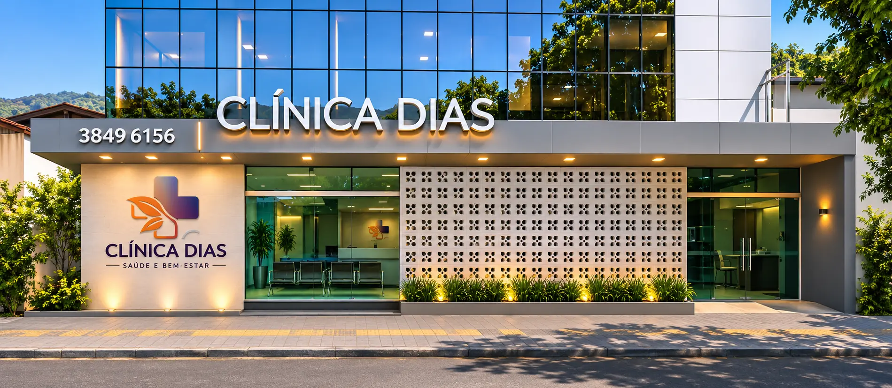
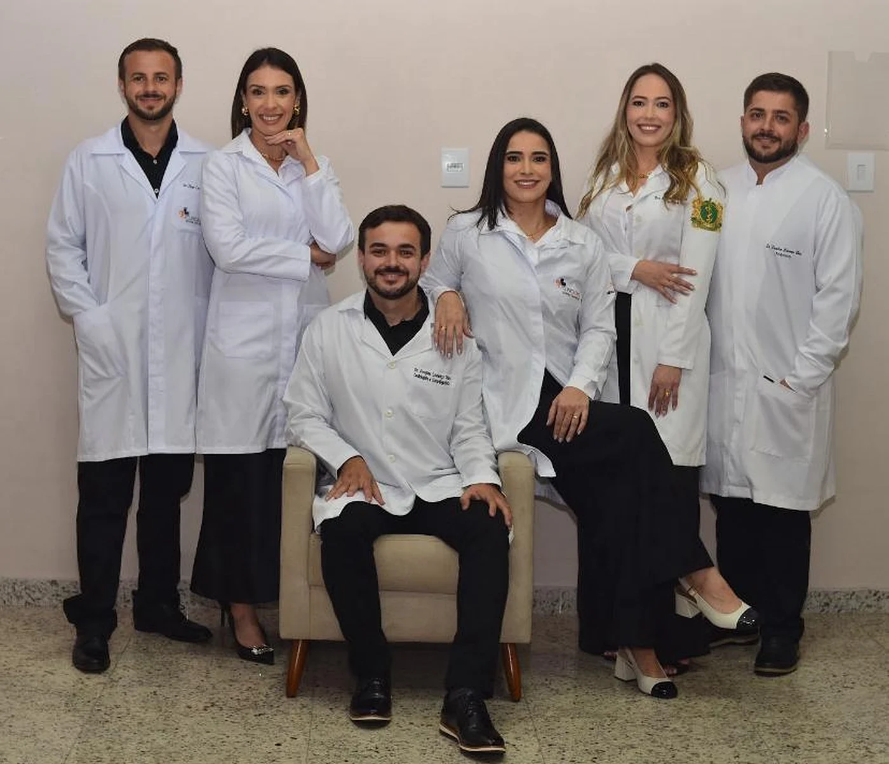
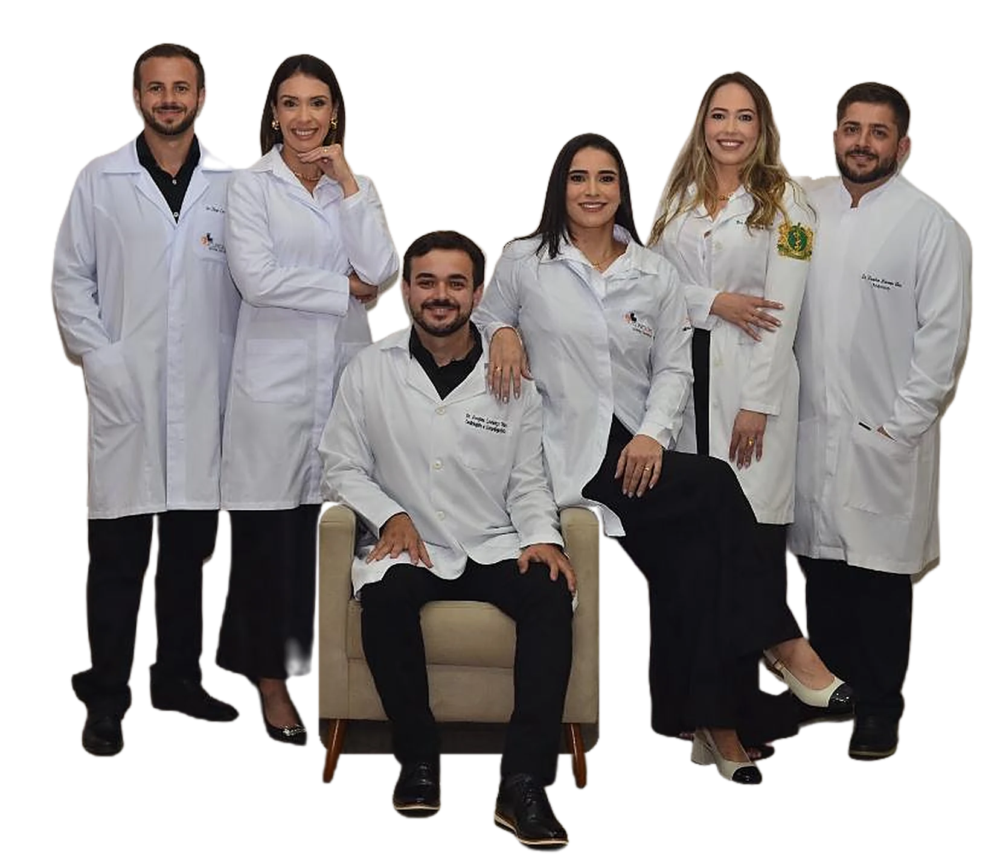

Na Rua Cento e Vinte e Oito
Bairro Santa Maria, em Timóteo. Você reconhece a clínica de longe.

Consultas, check-ups e exames, com resultado online. De segunda a sexta até as 22h.
Ligar agoraConsultas para avaliação, diagnóstico e tratamento, com orientação clara sobre cada passo.
Avaliação e acompanhamento de ansiedade, depressão, sono e outras questões de saúde mental.
Psicoterapia com escuta atenta, para falar do que pesa no dia a dia.
Avaliações periódicas para acompanhar sua saúde e identificar cedo qualquer alteração.
Solicitação e acompanhamento de exames, com os resultados disponíveis online.
Investigação e acompanhamento de alterações do sangue com atenção especializada.
Orientação e cuidados preventivos para manter a qualidade de vida em todas as idades.
Seguimento próximo de tratamentos e condições crônicas, com escuta e cuidado individual.
Oito áreas de atendimento
Clínica Geral
Consultas para avaliação, diagnóstico e tratamento, com orientação clara sobre cada passo.
Ligar para marcar
Bairro Santa Maria, em Timóteo. Você reconhece a clínica de longe.

Uma equipe multidisciplinar que trabalha de forma integrada.
Uma estrutura pensada para o conforto de quem nos procura.
Marcadas pelo telefone, com a recepção.
O resultado fica no portal do paciente.
Para cuidar antes que vire problema.
A recepção marca o melhor horário para você.
Consulta ou exame, com explicação clara sobre cada etapa.
O resultado fica no portal do paciente, para consultar de onde estiver.
Pelo telefone (31) 3849-6156. A recepção atende de segunda a sexta, das 7h às 22h, e sábado, das 8h às 19h.
No portal do paciente, pela internet. Se tiver problema para entrar, ligue para a recepção.
Rua Cento e Vinte e Oito, 14, bairro Santa Maria, Timóteo - MG, CEP 35180-002.
Ligue para a recepção e informe o seu plano antes de marcar.
Não. Em caso de urgência ou emergência, ligue 192 (SAMU) ou procure o pronto-atendimento mais próximo.